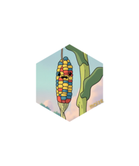
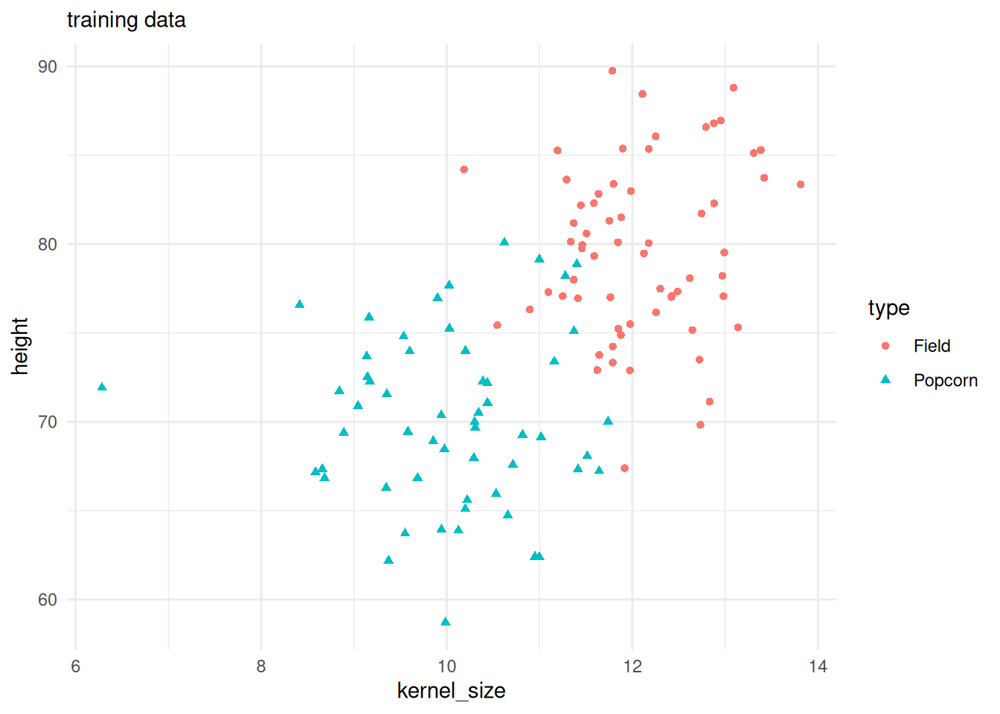
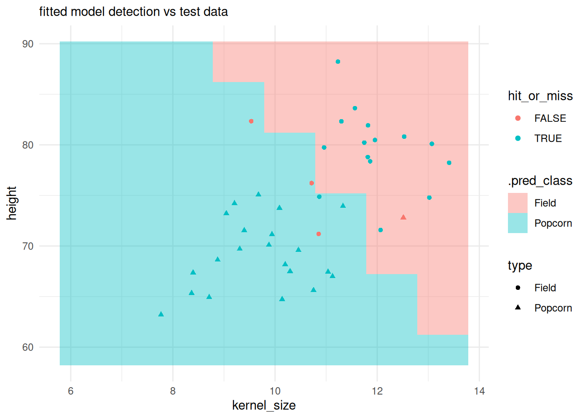
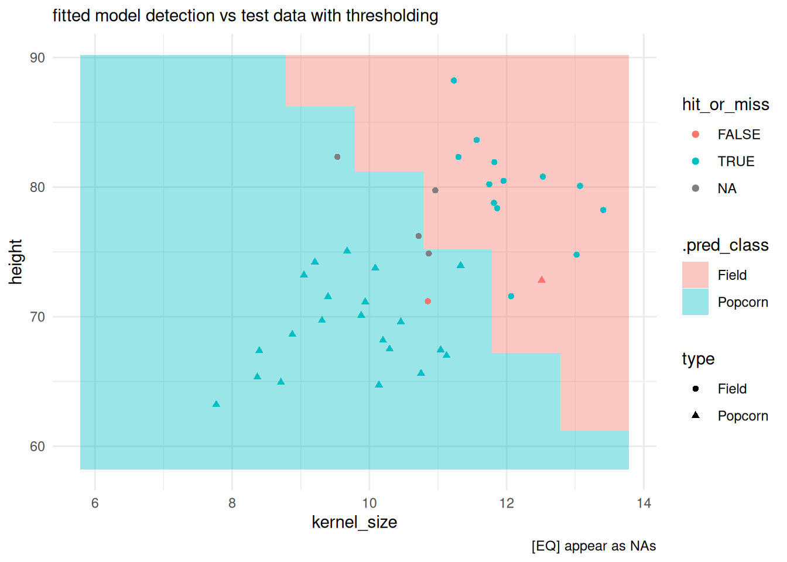

# inst dev versions for tailor and add_tailor
# inst pkgs for example purposes & r-universe
options(repos = c(CRAN = "https://cloud.r-project.org"))
install.packages(c("devtools", "probably", "ggplot2", "kernlab"))
#> Installing packages into '/home/runner/work/_temp/Library'
#> (as 'lib' is unspecified)
devtools::install_github("tidymodels/workflows")
#> Using github PAT from envvar GITHUB_PAT. Use `gitcreds::gitcreds_set()` and unset GITHUB_PAT in .Renviron (or elsewhere) if you want to use the more secure git credential store instead.
#> Downloading GitHub repo tidymodels/workflows@HEAD
#> sparsevctrs (0.3.4 -> 08efac807...) [GitHub]
#> parsnip (1.3.2 -> 6d4c68477...) [GitHub]
#> recipes (1.3.1 -> d269758cb...) [GitHub]
#> Downloading GitHub repo r-lib/sparsevctrs@HEAD
#>
#> ── R CMD build ─────────────────────────────────────────────────────────────────
#> * checking for file ‘/tmp/Rtmpv2bAw3/remotes25924a05d77f/r-lib-sparsevctrs-08efac8/DESCRIPTION’ ... OK
#> * preparing ‘sparsevctrs’:
#> * checking DESCRIPTION meta-information ... OK
#> * cleaning src
#> * checking for LF line-endings in source and make files and shell scripts
#> * checking for empty or unneeded directories
#> * building ‘sparsevctrs_0.3.4.9000.tar.gz’
#> Installing package into '/home/runner/work/_temp/Library'
#> (as 'lib' is unspecified)
#> Downloading GitHub repo tidymodels/parsnip@HEAD
#>
#> ── R CMD build ─────────────────────────────────────────────────────────────────
#> * checking for file ‘/tmp/Rtmpv2bAw3/remotes259211286a4b/tidymodels-parsnip-6d4c684/DESCRIPTION’ ... OK
#> * preparing ‘parsnip’:
#> * checking DESCRIPTION meta-information ... OK
#> * installing the package to process help pages
#> * checking for LF line-endings in source and make files and shell scripts
#> * checking for empty or unneeded directories
#> * building ‘parsnip_1.3.2.9000.tar.gz’
#> Installing package into '/home/runner/work/_temp/Library'
#> (as 'lib' is unspecified)
#> Downloading GitHub repo tidymodels/recipes@HEAD
#>
#> ── R CMD build ─────────────────────────────────────────────────────────────────
#> * checking for file ‘/tmp/Rtmpv2bAw3/remotes25921b88cd15/tidymodels-recipes-d269758/DESCRIPTION’ ... OK
#> * preparing ‘recipes’:
#> * checking DESCRIPTION meta-information ... OK
#> * checking for LF line-endings in source and make files and shell scripts
#> * checking for empty or unneeded directories
#> * building ‘recipes_1.3.1.9000.tar.gz’
#> Installing package into '/home/runner/work/_temp/Library'
#> (as 'lib' is unspecified)
#> ── R CMD build ─────────────────────────────────────────────────────────────────
#> * checking for file ‘/tmp/Rtmpv2bAw3/remotes25929b2c2fc/tidymodels-workflows-835ee35/DESCRIPTION’ ... OK
#> * preparing ‘workflows’:
#> * checking DESCRIPTION meta-information ... OK
#> * checking for LF line-endings in source and make files and shell scripts
#> * checking for empty or unneeded directories
#> * building ‘workflows_1.2.0.9000.tar.gz’
#> Installing package into '/home/runner/work/_temp/Library'
#> (as 'lib' is unspecified)
devtools::install_github("tidymodels/tailor")
#> Using github PAT from envvar GITHUB_PAT. Use `gitcreds::gitcreds_set()` and unset GITHUB_PAT in .Renviron (or elsewhere) if you want to use the more secure git credential store instead.
#> Skipping install of 'tailor' from a github remote, the SHA1 (5d10216b) has not changed since last install.
#> Use `force = TRUE` to force installation
library(parsnip)
library(maize)
#>
#> Attaching package: 'maize'
#> The following object is masked from 'package:parsnip':
#>
#> check_args
library(probably)
#>
#> Attaching package: 'probably'
#> The following objects are masked from 'package:base':
#>
#> as.factor, as.ordered
library(tailor)
library(ggplot2)

two-class-post-processing
The following example showcases the use of {maize} with post-processing libraries within the {tidymodels} ecosystem.
A quote from a fellow R programmer:
” curious about how the concept of {probably} plays into a (binary) classification scenario! I’d love to dive into an example case to see how it all comes together (detection, calibration, thresholding). Can we exemplify this via {maize}? ”
We have three goals here: 1) create an maize engine that showcases detection, calibration, and thresholding 2) start with an example of {probably} and then {tailor} 3) improve {maize} documentation!
two types of corn kernels we need to classify:
we’re filter down from three to two types of corn.
# binary classification problem data:
two_class_df <- maize::corn_data |>
dplyr::filter(type %in% c('Popcorn', 'Field')) |>
droplevels()
# --------------cornfield-------------------------
kernel_min <- two_class_df$kernel_size |> min()
kernel_max <- two_class_df$kernel_size |> max()
kernel_vec <- seq(kernel_min, kernel_max, by = 1)
height_min <- two_class_df$height |> min()
height_max <- two_class_df$height |> max()
height_vec <- seq(height_min, height_max, by = 1)
cornfield <- expand.grid(kernel_size = kernel_vec, height = height_vec)
# -----------------------------------------------create a three-way split using rsample:
three-way splits are useful for post-processing calibrations. we have a training set, a validation set for calibration, and then a final test set for checking the post-processing steps.
set.seed(42)
data_split <- rsample::initial_validation_split(two_class_df)
train <- rsample::training(data_split)
test <- rsample::testing(data_split)
valid <- rsample::validation(data_split)
train |>
ggplot() +
geom_point(aes(x = kernel_size, y = height, color = type, shape = type)) +
theme_minimal() +
labs(subtitle = "training data")
train a classification svm using workflows:
we could fit a model, but using a workflow gives us more flexibility downstream.
# model params --
svm_cls_spec <-
svm_sorensen(cost = 1, margin = 0.1) |>
set_mode("classification") |>
set_engine("kernlab")
# fit --
# simply fit a model
# svm_cls_fit <- svm_cls_spec |> fit(type ~ ., data = train)
# fit with a workflow --
# workflows allow for bundled pre- and post- processing
svm_wkflow <-
workflows::workflow() |>
workflows::add_model(svm_cls_spec) |>
workflows::add_formula(type ~ .)
svm_cls_fit <- fit(svm_wkflow, train){probably}
detection, thresholding, and calibration steps.
detecting class with {maize} and [EQ] thresholding via probably
let’s see what the confusion matrix looks like given our trained model.
There’s probably (no pun intended) an edge of overlapping observations. We could try to tune our parameters for a perfect confusion matrix. We could try calibrating our trained model. Or in some cases we cannot handle this edge, as it’s too uncertain to predict accurately, i.e. an equivocal zone.
classification field vs test observations:
preds <- predict(svm_cls_fit, cornfield, "class")
predfield <- cornfield |> cbind(preds)
test |>
dplyr::bind_cols(
initial_class_preds_test
) |>
dplyr::mutate(
hit_or_miss = type == .pred_class
) |>
ggplot() +
# plotting the classification field:
geom_tile(inherit.aes = FALSE,
data = predfield,
aes(x = kernel_size, y = height, fill = .pred_class),
alpha = .4) +
geom_point(aes(x = kernel_size, y = height, color = hit_or_miss, shape = type)) +
theme_minimal() +
labs(subtitle = "fitted model detection vs test data")
detection with equivocal zones via probably:
# predict the probability output instead of class:
initial_class_preds_prob_test <- predict(svm_cls_fit, test, type = "prob")
# probabilities and outcome:
initial_class_preds_prob_test <- initial_class_preds_prob_test |>
dplyr::bind_cols(test |> dplyr::select(type))
# probably EQ step:
class_preds_prob_eq <- initial_class_preds_prob_test |>
dplyr::mutate(
.pred_class = probably::make_two_class_pred(
estimate = .pred_Field,
levels = levels(type),
# adjust threshold and buffer to handle eq
threshold = 0.5,
buffer = 0.35
)
)
class_preds_prob_eq |>
dplyr::count(.pred_class)
#> # A tibble: 3 × 2
#> .pred_class n
#> <clss_prd> <int>
#> 1 [EQ] 4
#> 2 Field 14
#> 3 Popcorn 22check EQs:
test |>
dplyr::bind_cols(
class_preds_prob_eq |> dplyr::select(.pred_class)
) |>
dplyr::mutate(
.pred_class = as.factor(.pred_class),
hit_or_miss = type == .pred_class
) |>
ggplot() +
# plotting the classification field:
geom_tile(inherit.aes = FALSE,
data = predfield,
aes(x = kernel_size, y = height, fill = .pred_class),
alpha = .4) +
geom_point(aes(x = kernel_size, y = height, color = hit_or_miss, shape = type)) +
theme_minimal() +
labs(subtitle = "fitted model detection vs test data with thresholding",
caption = "[EQ] appear as NAs")
calibration with probably
note there are a few calibration functions for regression and classification in {probably}. We’re honing in on a calibration for classification and will demonstrate cal_estimate_logistic. Since we are doing calibration, we run this calibration step on validation data, then this validation step will be used to calibrate our predictions on test.
# predict the probability output instead of class:
initial_class_preds_prob_val <- predict(svm_cls_fit, valid, type = "prob")
# probabilities and outcome:
initial_class_preds_prob_val <- initial_class_preds_prob_val |>
dplyr::bind_cols(valid |> dplyr::select(type))
svm_cls_fit_calibrated <- initial_class_preds_prob_val |>
probably::cal_estimate_logistic(truth = "type")
#> Registered S3 method overwritten by 'butcher':
#> method from
#> as.character.dev_topic generics
# svm_cls_fit_calibrated
calibrated_preds_on_test <- probably::cal_apply(
initial_class_preds_prob_test,
svm_cls_fit_calibrated,
pred_class = ".pred_class"
)
# confusion matrix with calibration
calibrated_preds_on_test |>
yardstick::conf_mat(type, .pred_class)
#> Truth
#> Prediction Field Popcorn
#> Field 17 1
#> Popcorn 1 21{tailor}
experimental post-processing API layer to {probably}. Making post-processing easy!
if {parsnip} is the helper for engines, {recipes} are for pre-processing, tailor is a new package for post-processing. Note that the development version of workflows has workflows::add_tailor() to automate more of the process. It looks like these post process steps are being registered at tunable parameters too!
library(tailor)
post_process <- tailor() |>
adjust_probability_calibration(method = "logistic") |>
adjust_probability_threshold(threshold = 0.5) |>
adjust_equivocal_zone(value = 0.35)
tailored_wkflow <-
svm_wkflow |>
# add tailor adjustments to our initial workflow
workflows::add_tailor(
post_process
)
svm_cls_fit_tailor <- fit(tailored_wkflow, train, calibration = valid)
# with threshold and EQ buffer and logistic calibration
svm_cls_fit_tailor |>
predict(test) |>
dplyr::bind_cols(test) |>
yardstick::conf_mat(type, .pred_class)
#> Truth
#> Prediction Field Popcorn
#> Field 17 1
#> Popcorn 0 18